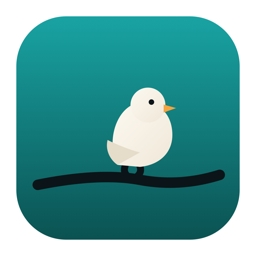
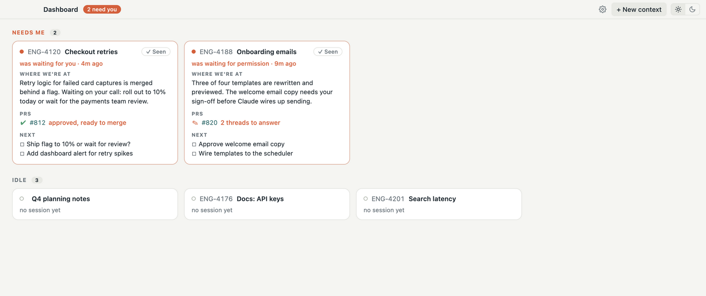
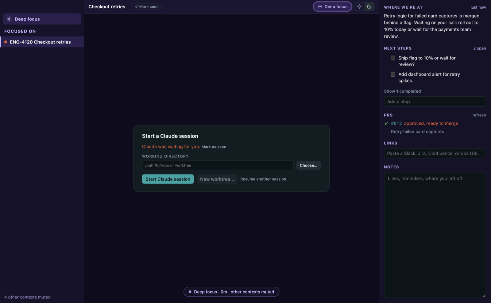
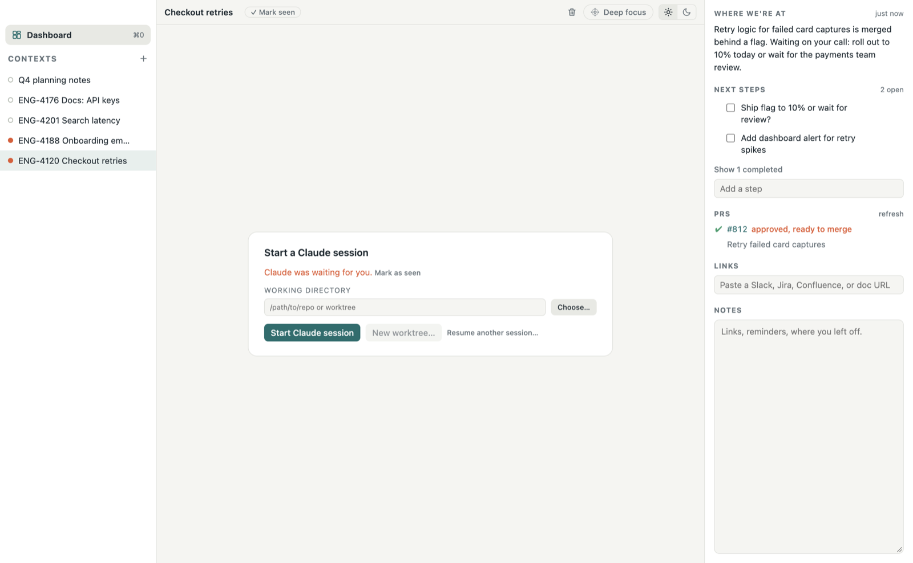

See everything at once
Know where every piece of work stands at a glance, without tracking multiple browser tabs.

PerchA calm Mac home for your Claude Code work, with every session, PR, and link in one place. Perch stays quiet while you're in flow, and tells you when something needs you.

Already using Claude Code? Pick the sessions you want and Perch resumes each one exactly where it left off.
Know where every piece of work stands at a glance, without tracking multiple browser tabs.
You hear from Perch only when Claude, a reviewer, or CI is waiting on you.
Every PR a piece of work produces is tracked with it, across repos and worktrees, so none slips through.
Quit or update Perch. Your Claude sessions keep running.
Mute every other context and stay with one. Leave when you choose to.


The real Claude Code terminal, with its summary, checklist, PRs, links, and notes beside it.
$0
$4.99/month
or $44.99 a year, three months free
Requires the Claude Code CLI. The GitHub CLI is optional, for PR states.